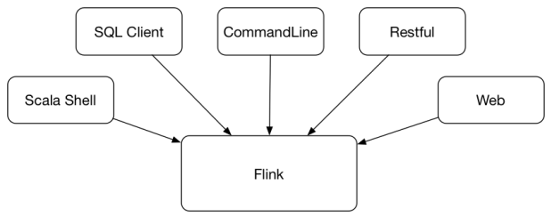
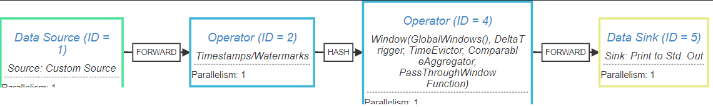

Flink 客户端操作
Flink 提供了丰富的客户端操作来提交认为和与任务进行交互。

Flink 安装目录的 bin 目录下有 flink，start-scala-shell.sh，sql-client.sh 等文件，这些都是客户端操作的入口。
1、Flink 命令行（CommandLine）
-h 查看 flink 命令行参数及说明：
$flink-1.7.2 bin/flink -h
查看某个命令的参数及说明，比如 run：
$flink-1.7.2 bin/flink run -h
1.1、Standalone 模式
1.1.1、run 运行任务
运行任务，以 Flink 自带的 TopSpeedWindowing 为例：
$flink-1.7.2 bin/flink run -d examples/streaming/TopSpeedWindowing.jar
Starting execution of program
Executing TopSpeedWindowing example with default input data set.
Use --input to specify file input.
Printing result to stdout. Use --output to specify output path.
Job has been submitted with JobID 5e20cb6b0f357591171dfcca2eea09de
打开Web 界面 http://127.0.0.1:8081 ，可以看到默认是 1 个并发，从 Task Manager 页签的 Stdout 可以看到输出日志。
1.1.2、list 查看任务列表
$flink-1.7.2 bin/flink list -m 127.0.0.1:8081
Waiting for response...
------------------ Running/Restarting Jobs -------------------
24.03.2019 10:14:06 : 5e20cb6b0f357591171dfcca2eea09de : CarTopSpeedWindowingExample (RUNNING)
--------------------------------------------------------------
No scheduled jobs.
1.1.3、stop 停止任务
通过 -m 来指定要停止的 JobManager 的主机地址和端口。
$flink-1.7.2 bin/flink stop -m 127.0.0.1:8081 d67420e52bd051fae2fddbaa79e046bb
Stopping job d67420e52bd051fae2fddbaa79e046bb.
一个 Job 能够被 Stop 要求所有的 Source 都是可以 Stoppable 的，即实现了 StoppableFunction 接口。否则 stop 命令会失败。
1.1.4、cancel 取消任务
如果在 conf/flink-conf.yaml 里面配置了 state.savepoints.dir，会保存 Savepoint，否则不会保存 Savepoint。
$flink-1.7.2 bin/flink cancel -m 127.0.0.1:8081 5e20cb6b0f357591171dfcca2eea09de
Cancelling job 5e20cb6b0f357591171dfcca2eea09de.
Cancelled job 5e20cb6b0f357591171dfcca2eea09de.
也可以在取消任务的时候，显式地指定 Savepoint 目录：
$flink-1.7.2 bin/flink cancel -m 127.0.0.1:8081 -s /tmp/savepoint 29da945b99dea6547c3fbafd57ed8759
Cancelling job 29da945b99dea6547c3fbafd57ed8759 with savepoint to /tmp/savepoint.
Cancelled job 29da945b99dea6547c3fbafd57ed8759. Savepoint stored in file:/tmp/savepoint/savepoint-29da94-88299bacafb7.
取消和停止流作业的区别：
cancel()调用，立即调用作业算子的cancel()方法，以尽快取消它们。如果算子在接到cancel()调用后没有停止，Flink 将开始定期中断算子线程的执行，直到所有算子停止为止。stop()调用，是以更优雅的方式停止正在运行的流作业。stop()仅适用于 Source 实现了 StoppableFunction 接口的作业。当用户请求停止作业时，作业的所有 Source 都将接收stop()方法调用。直到所有 Source 正常关闭时，作业才会正常结束。这种方式，使作业正常处理完所有作业。
1.1.5、Savepoint
手动触发 Savepoint：
$flink-1.7.2 bin/flink savepoint -m 127.0.0.1:8081 ec53edcfaeb96b2a5dadbfbe5ff62bbb /tmp/savepoint
Triggering savepoint for job ec53edcfaeb96b2a5dadbfbe5ff62bbb.
Waiting for response...
Savepoint completed. Path: file:/tmp/savepoint/savepoint-ec53ed-84b00ce500ee
You can resume your program from this savepoint with the run command.
Savepoint 和 Checkpoint 的区别：
- Checkpoint 是增量做的，每次的时间较短，数据量较小，只要在程序里面启用后会自动触发，用户无须感知；Checkpoint 是作业 failover 的时候自动使用，不需要用户指定。
- Savepoint 是全量做的，每次的时间较长，数据量较大，需要用户主动去触发。Savepoint 一般用于程序的版本更新（详见文档），Bug 修复，A/BTest 等场景，需要用户指定。
使用 -s 参数，使任务从指定的 Savepoint 启动：
$flink-1.7.2 bin/flink run -d -s /tmp/savepoint/savepoint-f049ff-24ec0d3e0dc7 ./examples/streaming/TopSpeedWindowing.jar
Starting execution of program
Executing TopSpeedWindowing example with default input data set.
从 JobManager 的日志，能够看到类似如下的日志：
...
Starting job 790d7b98db6f6af55d04aec1d773852d from savepoint /tmp/savepoint/savepoint-f049ff-24ec0d3e0dc7 ()
...
1.1.6、modify 修改任务并行度
为了方便演示，修改 conf/flink-conf.yaml 将 Task Slot 数从默认的 1 改为 4，并配置 Savepoint 目录：
taskmanager.numberOfTaskSlots: 4
state.savepoints.dir: file:///tmp/savepoint
修改参数后需要重启 standalone 集群，从 Web UI 可以看到 Task slot 为 4，任务默认并行度为 1。
$flink-1.7.2 bin/flink modify -p 4 7752ea7b0e7303c780de9d86a5ded3fa
Modify job 7752ea7b0e7303c780de9d86a5ded3fa.
Rescaled job 7752ea7b0e7303c780de9d86a5ded3fa. Its new parallelism is 4.
$flink-1.7.2 ll /tmp/savepoint
total 0
drwxr-xr-x 3 baoniu 96 Jun 17 09:05 savepoint-7752ea-00c05b015836/
$flink-1.7.2 bin/flink modify -p 3 7752ea7b0e7303c780de9d86a5ded3fa
Modify job 7752ea7b0e7303c780de9d86a5ded3fa.
Rescaled job 7752ea7b0e7303c780de9d86a5ded3fa. Its new parallelism is 3.
$flink-1.7.2 ll /tmp/savepoint
total 0
drwxr-xr-x 3 baoniu 96 Jun 17 09:08 savepoint-7752ea-449b131b2bd4/
通过 modify 命令依次将并发度修改为 4 和 3，可以看到每次 modify 命令都会触发一次 Savepoint，任务。
1.1.7、info 命令查看执行计划
info 命令是用来查看 Flink 任务的执行计划（StreamGraph）的。
$flink-1.7.2 bin/flink info examples/streaming/TopSpeedWindowing.jar
----------------------- Execution Plan -----------------------
{"nodes":[{"id":1,"type":"Source: Custom Source","pact":"Data Source","contents":"Source: Custom Source","parallelism":1},{"id":2,"type":"Timestamps/Watermarks","pact":"Operator","contents":"Timestamps/Watermarks","parallelism":1,"predecessors":[{"id":1,"ship_strategy":"FORWARD","side":"second"}]},{"id":4,"type":"Window(GlobalWindows(), DeltaTrigger, TimeEvictor, ComparableAggregator, PassThroughWindowFunction)","pact":"Operator","contents":"Window(GlobalWindows(), DeltaTrigger, TimeEvictor, ComparableAggregator, PassThroughWindowFunction)","parallelism":1,"predecessors":[{"id":2,"ship_strategy":"HASH","side":"second"}]},{"id":5,"type":"Sink: Print to Std. Out","pact":"Data Sink","contents":"Sink: Print to Std. Out","parallelism":1,"predecessors":[{"id":4,"ship_strategy":"FORWARD","side":"second"}]}]}
--------------------------------------------------------------
输出的 Json 内容，粘贴到网站：http://flink.apache.org/visualizer/

可以与 Web UI 显示的物理执行计划对比。
1.2、Yarn per-job
1.2.1、单任务 Attach 模式
默认为 Attach 模式——客户端会一直等待直到程序结束才会退出。
通过 -m yarn-cluster 指定 Yarn 模式，运行 Batch 任务
$./bin/flink run -m yarn-cluster ./examples/batch/WordCount.jar
Yarn 资源管理器 Web UI 可以看到名为 Flink session cluster 的应用，WordCount 这个 batch 任务运行完状态会显示为 FINISHED。
如果以 Attach 模式运行 Streaming 任务，客户端会一直等待不退出：
$./bin/flink run -m yarn-cluster ./examples/streaming/TopSpeedWindowing.jar
1.2.2、单任务 Detached 模式
Detached 模式下，客户端在提交完任务后就会退出：
$./bin/flink run -yd -m yarn-cluster ./examples/streaming/TopSpeedWindowing.jar
Yarn 资源管理器中任务的名称为 per-job cluster。
1.3、Yarn session
1.3.1、启动 Session
$./bin/yarn-session.sh -tm 2048 -s 3
表示启动一个 Yarn session 集群，每个 TM 的内存是 2 G，每个 TM 有 3 个 Slot。
客户端默认是 Attach 模式，不会退出，可以通过 ctrl + C 退出，之后，可以通过 ./bin/yarn-session.sh -idapplication_1532332183347_0726 重新连接。
启动 yarn session 的时候，可以使用 -d 以 Detached 模式启动。
Yarn 资源管理器上显示为 Flink session cluster，在本机的临时目录（/tmp，某些机器是 /var）下会生成一个文件：
$flink-1.7.2 cat /var/folders/2b/r6d49pcs23z43b8fqsyz885c0000gn/T/.yarn-properties-admin
parallelism=3
dynamicPropertiesString=
applicationID=application_1532332183347_0726
提交任务时，默认会根据临时文件内容提交到刚启动的 session：
$flink-1.7.2 ./bin/flink run ./examples/batch/WordCount.jar
任务运行结束，TM 的资源会释放。
1.3.2、提交到指定的 session
通过 -yid 参数可以提交任务到指定的 session：
$./bin/flink run -d -p 30 -m yarn-cluster -yid application_1532332183347_0708 ./examples/streaming/TopSpeedWindowing.jar
2、Scala shell
2.1、Deploy
2.1.1、Local
$bin/start-scala-shell.sh local
Starting Flink Shell:
Starting local Flink cluster (host: localhost, port: 8081).
Connecting to Flink cluster (host: localhost, port: 8081).
... ...
scala>
任务运行说明：
• Batch 任务内置了 benv 变量，通过 print() 将结果输出到控制台；
• Streaming 任务内置了 senv 变量，通过 senv.execute("job name") 来提交任务，且 Datastream 的输出只有在 Local 模式下打印到控制台；
2.1.2、Remote
首先启动 yarn session cluster：
$./bin/yarn-session.sh -tm 2048 -s 3
......
Flink JobManager is now running on z054.sqa.net:28665 with leader id 00000000-0000-0000-0000-000000000000.
JobManager Web Interface: http://z054.sqa.net:28665
启动 scala shell，连接到 JM：
$bin/start-scala-shell.sh remote z054.sqa.net 28665
Starting Flink Shell:
Connecting to Flink cluster (host: z054.sqa.net, port: 28665).
... ...
scala>
2.1.3、Yarn
$./bin/start-scala-shell.sh yarn -n 2 -jm 1024 -s 2 -tm 1024 -nm flink-yarn
Starting Flink Shell:
......
Connecting to Flink cluster (host: 10.10.10.10, port: 56942).
Yarn 资源管理器中启动的应用名称为 flink-yarn（-nm），按 CTRL + C 退出 Shell 后，这个 Flink cluster 还会继续运行，不会退出。
2.2、Execute
2.2.1、DataSet 任务
$flink-1.7.2 bin/stop-cluster.sh
No taskexecutor daemon to stop on host zkb-MBP.local.
No standalonesession daemon to stop on host zkb-MBP.local.
$flink-1.7.2 bin/start-scala-shell.sh local
Starting Flink Shell:
Starting local Flink cluster (host: localhost, port: 8081).
Connecting to Flink cluster (host: localhost, port: 8081).
scala> val text = benv.fromElements("To be, or not to be,--that is the question:--")
text: org.apache.flink.api.scala.DataSet[String] = org.apache.flink.api.scala.DataSet@5b407336
scala> val counts = text.flatMap { _.toLowerCase.split("\\W+") }.map { (_, 1) }.groupBy(0).sum(1)
counts: org.apache.flink.api.scala.AggregateDataSet[(String, Int)] = org.apache.flink.api.scala.AggregateDataSet@6ee34fe4
scala> counts.print()
(be,2)
(is,1)
(not,1)
(or,1)
(question,1)
(that,1)
(the,1)
(to,2)
对 DataSet 任务来说，print() 会触发任务的执行。通过 Flink Web UI 可以看到执行的任务。
也可以将结果输出到文件（要先删除 /tmp/out1，不然会因为存在同名文件而报错）：
scala> counts.writeAsText("/tmp/out1")
res1: org.apache.flink.api.java.operators.DataSink[(String, Int)] = DataSink '<unnamed>' (TextOutputFormat (/tmp/out1) - UTF-8)
scala> benv.execute("batch test")
res2: org.apache.flink.api.common.JobExecutionResult = org.apache.flink.api.common.JobExecutionResult@737652a9
查看 /tmp/out1 文件内容：
$flink-1.7.2 cat /tmp/out1
(be,2)
(is,1)
(not,1)
(or,1)
(question,1)
(that,1)
(the,1)
(to,2)
2.2.2、DataStream 任务
scala> val textStreaming = senv.fromElements("To be, or not to be,--that is the question:--")
textStreaming: org.apache.flink.streaming.api.scala.DataStream[String] = org.apache.flink.streaming.api.scala.DataStream@4970b93d
scala> val countsStreaming = textStreaming.flatMap { _.toLowerCase.split("\\W+") }.map { (_, 1) }.keyBy(0).sum(1)
countsStreaming: org.apache.flink.streaming.api.scala.DataStream[(String, Int)] = org.apache.flink.streaming.api.scala.DataStream@6a478680
scala> countsStreaming.print()
res3: org.apache.flink.streaming.api.datastream.DataStreamSink[(String, Int)] = org.apache.flink.streaming.api.datastream.DataStreamSink@42bfc11f
scala> senv.execute("Streaming Wordcount")
(to,1)
(be,1)
(or,1)
(not,1)
(to,2)
(be,2)
(that,1)
(is,1)
(the,1)
(question,1)
res4: org.apache.flink.api.common.JobExecutionResult = org.apache.flink.api.common.JobExecutionResult@1878815a
对 DataStream 任务，print() 并不会触发任务的执行，需要显式调用 execute("job name") 才会执行任务。
2.2.3、TableAPI 任务
...
3、SQL Client
3.1、基本用法
$flink-1.7.2 bin/start-cluster.sh
Starting cluster.
Starting standalonesession daemon on host zkb-MBP.local.
Starting taskexecutor daemon on host zkb-MBP.local.
$flink-1.7.2 ./bin/sql-client.sh embedded
...
Flink SQL> help;
The following commands are available:
QUIT Quits the SQL CLI client.
CLEAR Clears the current terminal.
HELP Prints the available commands.
SHOW TABLES Shows all registered tables.
SHOW FUNCTIONS Shows all registered user-defined functions.
DESCRIBE Describes the schema of a table with the given name.
EXPLAIN Describes the execution plan of a query or table with the given name.
SELECT Executes a SQL SELECT query on the Flink cluster.
INSERT INTO Inserts the results of a SQL SELECT query into a declared table sink.
CREATE VIEW Creates a virtual table from a SQL query. Syntax: 'CREATE VIEW <name> AS <query>;'
DROP VIEW Deletes a previously created virtual table. Syntax: 'DROP VIEW <name>;'
SOURCE Reads a SQL SELECT query from a file and executes it on the Flink cluster.
SET Sets a session configuration property. Syntax: 'SET <key>=<value>;'. Use 'SET;' for listing all properties.
RESET Resets all session configuration properties.
Hint: Make sure that a statement ends with ';' for finalizing (multi-line) statements.
可以在 Flink SQL 模式下交互式的执行 SQL，使用 EXPLAN 命令可以查看 SQL 的执行计划。
3.2、结果展示
SQL Client 支持两种模式来维护并展示查询结果：
tablemode：在内存中物化查询结果，并以分页 table 形式展示。启用 table mode 的命令：
SET execution.result-mode=tablechangelog mode：不会物化查询结果，直接对 continuous query 差生的添加和撤回（retractions）结果进行展示。通过下面命令启用：
SET execution.result-mode=changelog
3.3、Environment Files
...
4、Restful API
通过 Restful API 可以提交 JAR 包、执行任务。Restful API 还提供了很多监控和 Metrics 相关的功能，对于任务提交的操作的支持也比较全面。
5、Web
在 Flink Dashboard 页面左侧可以看到有个「Submit new Job」的地方，用户可以上传 Jar 包和显示执行计划和提交任务。Web 提交功能主要用于新手入门和演示用。